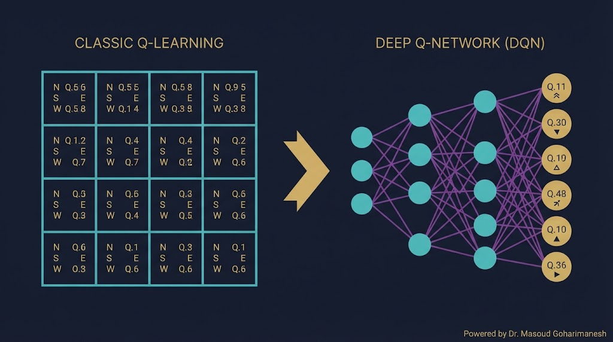
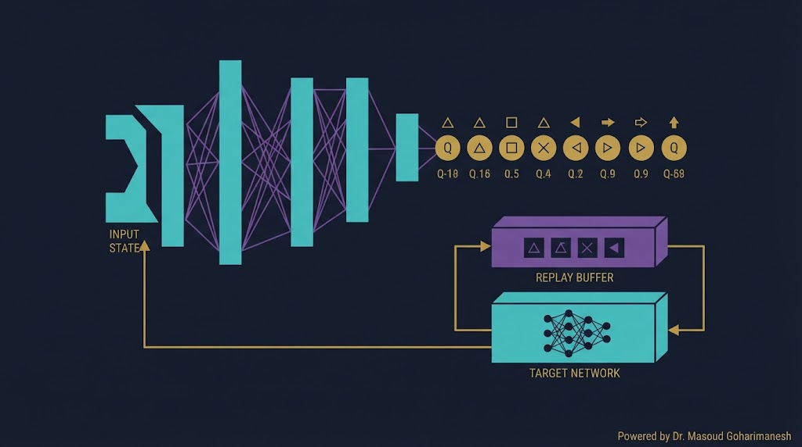
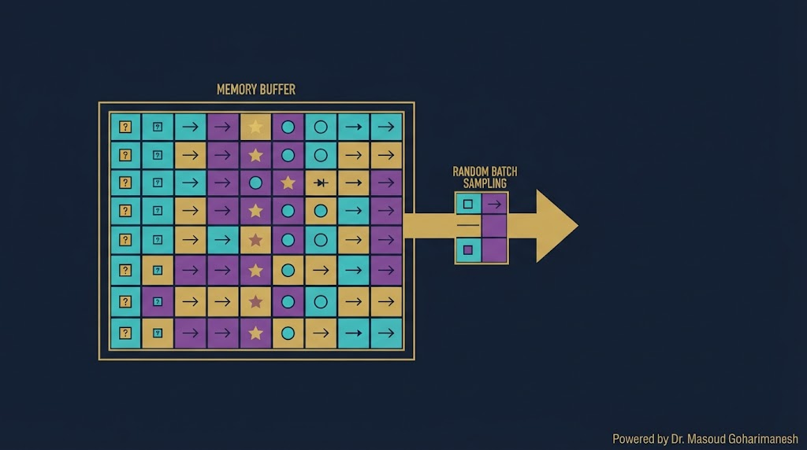
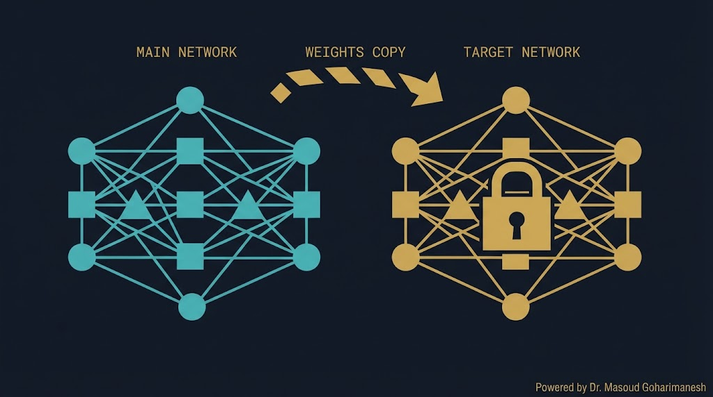
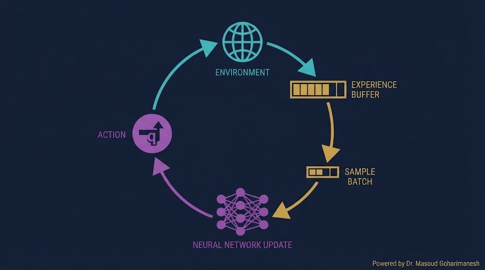
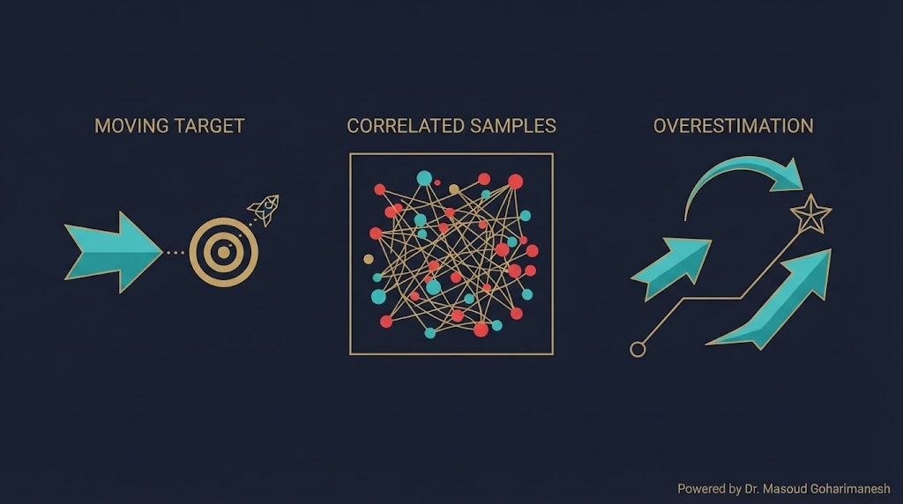
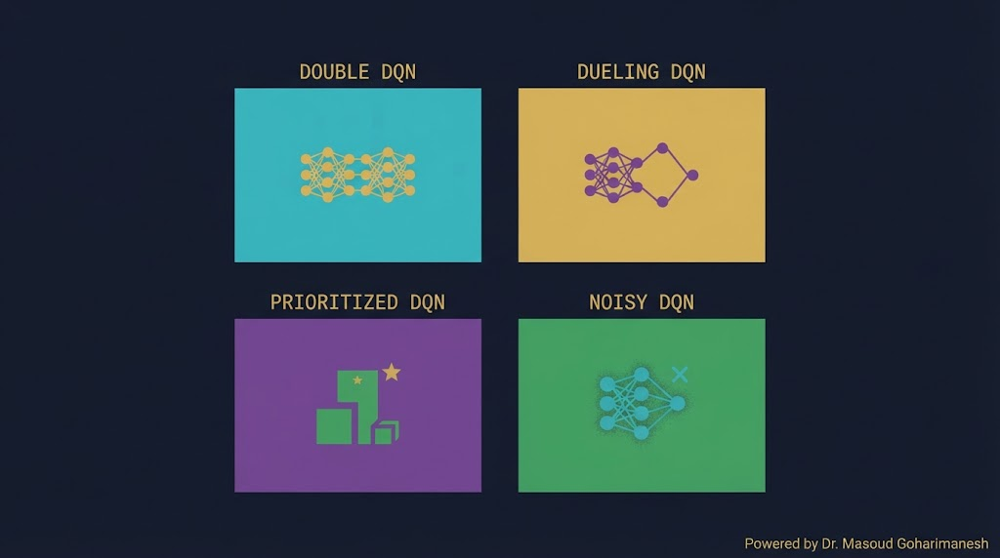
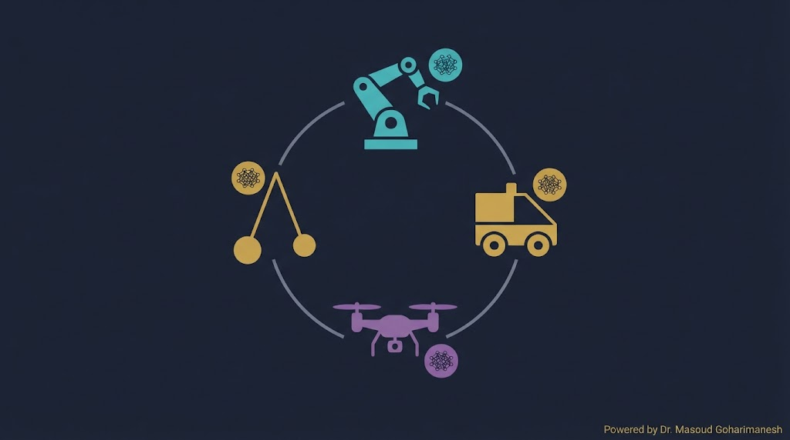

جلسه ۱۴ — Q-Learning و DQN
جلسه ۱۴ — Q-Learning و DQN
جلسه ۱۴ — Q-Learning و DQN
جلسه ۱۴ — Q-Learning و DQN
 ستاره این جلسه
به یاد شهدای والامقام
ستاره این جلسه
به یاد شهدای والامقامDeep Q-Network · Experience Replay · Target Network
When Reinforcement Learning Meets Deep Learning
RL، MDP، Q-Learning، ε-greedy
Q-Network، DQN، Replay، Target
✅ محدودیت Q-Table
✅ از Q-Table به Q-Network
✅ Experience Replay
✅ Target Network
✅ الگوریتم کامل DQN
✅ پیادهسازی با PyTorch
Q-Learning کلاسیک فقط برای محیطهایی کار میکند که تعداد حالتها محدود باشد (مثل Grid World). اما در مسائل واقعی — بازی Atari، رانندگی خودران، کنترل ربات — تعداد حالتها میلیاردها است. نگهداشتن یک Q-Table با میلیارد سطر، غیرممکن است.
DQN (Deep Q-Network) این مشکل را با یک ایدهی ساده اما انقلابی حل کرد: به جای جدول، از یک شبکه عصبی استفاده کنیم که Q-Value را تقریب بزند. این همان نقطهای است که RL و DL به هم میپیوندند.
Q-Table را با NN جایگزین میکند
Replay، Target، Epsilon
سال ۲۰۱۵ — DeepMind
از PPO تا SAC روی آن ساخته شده
وضعیتهایی مثل موقعیت ربات (x, y, θ) بینهایت حالت دارد — نمیشود جدول ساخت
حتی حالتهای گسسته (مثل صفحه شطرنج) آنقدر زیادند که جدول غیرعملی است
Q-Table برای هر حالت جداگانه آموزش میبیند — نمیتواند تعمیم دهد

| ویژگی | Q-Table | Q-Network |
|---|---|---|
| حافظه | |S| × |A| | فقط پارامترهای شبکه |
| حالت پیوسته | غیرممکن | عالی |
| تعمیم | ندارد | خوب |
| سرعت | بسیار سریع | متوسط |
| پیچیدگی | کم | زیاد |
مقایسه حافظه مصرفی و توانایی تعمیم.

جایگزینی جدول با شبکه عصبی
ذخیره تجربهها و نمونهگیری تصادفی
شبکه دوم برای کاهش نوسانات
در DQN، هر تجربه $(s, a, r, s')$ در یک حافظه ذخیره میشود. سپس برای آموزش، یک batch تصادفی از این تجربهها نمونهگیری میشود.

۱. تجربهها همبسته نیستند — batch تصادفی بهتر
۲. یک تجربه چندین بار استفاده میشود
معمولاً ۱۰,۰۰۰ تا ۱,۰۰۰,۰۰۰
در Q-Learning، همزمان که Q را بهروزرسانی میکنیم، هدف $\max Q(s', a')$ هم تغییر میکند — مثل این است که به یک هدف متحرک شلیک کنیم! Target Network این مشکل را حل میکند.

شبکه اصلی — همه گامها بهروزرسانی
شبکه هدف — هر N گام کپی میشود
یک تجربه جدید را وارد buffer کنید و یک batch تصادفی نمونهگیری کنید.

# شبهکد DQN initialize Q_θ, Q_θ- (θ- = θ) initialize replay buffer D for episode in range(M): state = env.reset() while not done: # انتخاب عمل با ε-greedy if random() < ε: action = random_action() else: action = argmax Q_θ(state) # اجرا و ذخیره next_state, reward, done = env.step(action) D.append((state, action, reward, next_state, done)) # نمونهگیری و آموزش batch = sample(D, batch_size) for (s, a, r, s', d) in batch: target = r if d else r + γ·max Q_θ-(s') loss = (target - Q_θ(s,a))² update θ with gradient # بهروزرسانی Target هر N گام if step % N == 0: θ- = θ state = next_state
DQN از MSE بین Q پیشبینیشده و Q هدف استفاده میکند.
$y = r + \gamma \max Q_{\theta^-}$ — ثابت است (از Target Network)
$\hat{y} = Q_\theta(s, a)$ — از شبکه اصلی
$(y - \hat{y})^2$ — MSE
DQN را روی CartPole آموزش دهید و پیشرفت را ببینید.

$\max Q$ تمایل دارد بیشتر از واقعیت برآورد کند
راهحل: Double DQN
نوسانات زیاد در یادگیری
راهحل: Dueling، Prioritized
یادگیری کند در محیطهای پیچیده
راهحل: Rainbow DQN

| نسخه | بهبود | سال |
|---|---|---|
| DQN | پایه | ۲۰۱۳/۲۰۱۵ |
| Double DQN | کاهش Overestimation | ۲۰۱۵ |
| Dueling DQN | تفکیک Value و Advantage | ۲۰۱۶ |
| Prioritized DQN | نمونهگیری هوشمند از buffer | ۲۰۱۶ |
| Rainbow | ترکیب همه بهبودها | ۲۰۱۷ |

بازوی رباتیکی، راهرفتن
تصمیمگیری در ترافیک
کنترل پرواز
مسئله کلاسیک کنترل
import torch import torch.nn as nn class DQN(nn.Module): def __init__(self, state_size, action_size): super().__init__() self.net = nn.Sequential( nn.Linear(state_size, 128), nn.ReLU(), nn.Linear(128, 128), nn.ReLU(), nn.Linear(128, action_size) ) def forward(self, x): return self.net(x)
import gymnasium as gym import random from collections import deque env = gym.make('CartPole-v1') state_size = env.observation_space.shape[0] action_size = env.action_space.n policy_net = DQN(state_size, action_size) target_net = DQN(state_size, action_size) target_net.load_state_dict(policy_net.state_dict()) optimizer = torch.optim.Adam(policy_net.parameters(), lr=1e-3) memory = deque(maxlen=10000) gamma = 0.99 epsilon = 1.0 batch_size = 64 target_update = 10 for episode in range(500): state, _ = env.reset() total_reward = 0 done = False while not done: # ε-greedy if random.random() < epsilon: action = env.action_space.sample() else: with torch.no_grad(): q_values = policy_net(torch.FloatTensor(state)) action = q_values.argmax().item() next_state, reward, done, truncated, _ = env.step(action) memory.append((state, action, reward, next_state, done or truncated)) state = next_state total_reward += reward # آموزش if len(memory) >= batch_size: batch = random.sample(memory, batch_size) states, actions, rewards, next_states, dones = zip(*batch) states = torch.FloatTensor(states) actions = torch.LongTensor(actions) rewards = torch.FloatTensor(rewards) next_states = torch.FloatTensor(next_states) dones = torch.FloatTensor(dones) q_values = policy_net(states).gather(1, actions.unsqueeze(1)).squeeze() next_q = target_net(next_states).max(1)[0] targets = rewards + gamma * next_q * (1 - dones) loss = nn.MSELoss()(q_values, targets) optimizer.zero_grad() loss.backward() optimizer.step() epsilon = max(0.01, epsilon * 0.995) if episode % target_update == 0: target_net.load_state_dict(policy_net.state_dict()) print(f"Episode {episode}: reward={total_reward:.1f}, epsilon={epsilon:.3f}")
% ساخت محیط CartPole env = rlPredefinedEnv('CartPole-Continuous'); obsInfo = getObservationInfo(env); actInfo = getActionInfo(env); % ساخت شبکه عصبی net = [ featureInputLayer(obsInfo.Dimension(1)) fullyConnectedLayer(128) reluLayer fullyConnectedLayer(128) reluLayer fullyConnectedLayer(numel(actInfo.Elements)) ]; % ساخت DQN Agent dqnOpts = rlDQNAgentOptions(... 'SampleTime', 0.1, ... 'TargetUpdateFrequency', 10, ... 'ExperienceBufferLength', 10000); agent = rlDQNAgent(net, obsInfo, actInfo, dqnOpts); % آموزش trainOpts = rlTrainingOptions(... 'MaxEpisodes', 500, ... 'Plots', 'training-progress'); trainedAgent = train(agent, env, trainOpts);
[AI] HW14 - نام - شماره دانشجویی به arcslab.uth@gmail.com
جستوجوی پروژههای DQN
جلسه ۱۴ — اصلیتحلیل کد PyTorch
پشتیبانتولید کد DQN
پیشنهادیدر Perplexity جستوجو کنید: «DQN robotic control 2024» و ۳ مقاله معتبر پیدا کنید.
شبکه عصبی بهجای Q-Table
ذخیره تجربهها و نمونه تصادفی
کاهش نوسانات با شبکه دوم
MSE بین Q فعلی و هدف
Double، Dueling، Prioritized، Rainbow
• محدودیت DQN در فضای عمل پیوسته
• Policy-Based Methods
• REINFORCE
• Actor-Critic
• PPO — Proximal Policy Optimization
۱. HW14 را در Google Drive آپلود کنید
۲. Stable-Baselines3 نصب کنید
۳. یک مثال PPO با آن اجرا کنید
Next Session: Policy Gradient & PPO